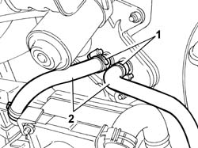
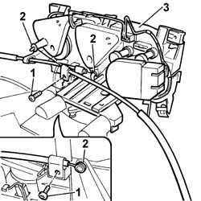
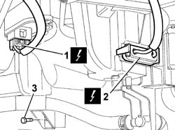
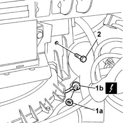
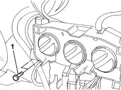

5020A12 HEATER CASING - R+R WITH FACIA REMOVED
- Path
- Procedures > 50 AUXILIARY UNITS > 5020 HEATER > 5020A BOX AND COMPONENTS > 5020A12 HEATER CASING - R+R WITH FACIA REMOVED
- Kind
- repair procedure (removal / refitting; the operation number is the code)
- Applies to
- all engines; all production periods
- Interactive page
- https://sloeber94.github.io/elrnDB-fDct/en/#/244001237
Applies to: all engines; all production periods
 Removing
Removing
 Refitting
RefittingOp. 0010T20 COOLANT CHECK DENSITY AND TOP UP IF NECESSARY
1. Remove the retaining bands.
2. Disconnect the pipes from the heater tap.

Applies to: all engines; all production periods
- Mark the control cables.
1. Undo the retaining bolts.
2. Disconnect the control cables.
3. Remove the heater controls support.

Applies to: all engines; all production periods
- Undo the bolts fixing the dashboard trim supporting crossmember.
1. Disconnect the electrical connection for the fan resistance.
Description | Connector | |
|---|---|---|
1 | Passenger compartment air fan adjustment resistance | O030 |
2. Disconnect the electrical connection for the fan.
Description | Connector | |
|---|---|---|
2 | Passenger compartment air fan | N085 |
3. Undo the lower fixing nut.

Applies to: all engines; all production periods
1. Undo the nut (1a) and disconnect the earth (1b).
Description | Connector | |
|---|---|---|
1b | Passenger dashboard earth | C020 |
2. Undo the retaining bolt.

Applies to: all engines; all production periods
1. Undo the retaining bolts.

Applies to: all engines; all production periods
- Open the retaining bands and move the electrical wiring aside.
- With the help of a second mechanic, lift up the dashboard trim supporting crossmember.
- Remove the heater casing.
Applies to: all engines; all production periods
Refitting
Removing- With the help of a second mechanic, lift up the dashboard trim supporting crossmember and place the heater casing in position.
- Tighten the bolts fixing the dashboard trim supporting crossmember.
- Tighten the bolts and the nut fixing the heater casing.
- Refit the electrical connections.
Description | Connector | |
|---|---|---|
- | Passenger compartment air fan | N085 |
Description | Connector | |
|---|---|---|
- | Passenger compartment air fan adjustment resistance | O030 |
- Place the earth in the wheel arch and tighten the fixing nut.
Description | Connector | |
|---|---|---|
- | Passenger dashboard earth | C020 |
- Position the wiring and secure it using the retaining bands.
- Position the heater controls support.
- Connect the control cables marked previously and tighten the fixing bolts.
- Connect the pipes to the heater tap and secure them using the retaining bands.